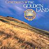

Celtic Lyrics Corner > Artists & Groups > Ceredwen > The Golden Land > Tir Aur
|  | Tir Aur |
| Credits : | Ceredwen |
| Appears On : | The Golden Land |
| Language : | Cymraeg (Welsh) |
| Lyrics : | English Translation : | ||
| Tymorau'n newid yn ei blaen | Seasons forever changing | ||
| Prydferthwch cefn gwlad yn tynnu sylw - Rhufain | The beauty of the land drawing the attention of Rome | ||
| Yn ein gwlad, cefngwlad | In our land, our country | ||
| Tymorau'n newid yn ei blaen | Seasons forever changing | ||
| Prydferthwch cefn gwlad yn tynnu sylw - Rhufain | The beauty of the land drawing the attention of Rome | ||
| Ynys ffrwythlon yn llawn o gyfoeth | This fruitful island, full of wealth | ||
| Digon o adnoddau materol ac ysbrydol | Of the earth and of the spirit | ||
| Yn y wlad gyfoethog | In the wealthy land | ||
| Arian ag Aur | Of silver and gold | ||
| Yn ei digonedd | There is plenty | ||
| I rhannu rhwng phawb | To share amongst all | ||
| Amgylchfyd, amgychfyd delfrydol | This ideal place, full of wealth | ||
| Yn llawn o gyfoeth materol ac ysbrydol | Of the earth and of the spirit | ||
| Amgylchfyd | Yn y wlad gyfoethog | This | In the wealthy land |
| Amgychfyd delfrydol | Arian ag Aur | Ideal place | Of silver and gold |
| Yn llawn o gyfoeth | Yn ei digonedd | Full of wealth of the | There is plenty |
| Materol ac ysbrydol | I rhannu rhwng phawb | Earth and of the spirit | To share amongst all |
| Maent yn dod i'r ynys ffrwythlon | They come to the fruitful island | ||
| Er mwyn casglu'r cyfoeth aur... | To collect the golden wealth... | ||